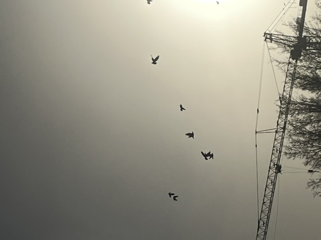
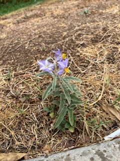
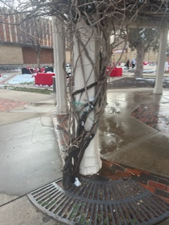
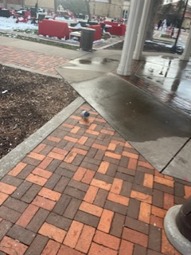
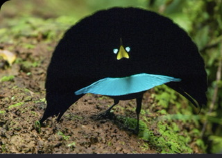
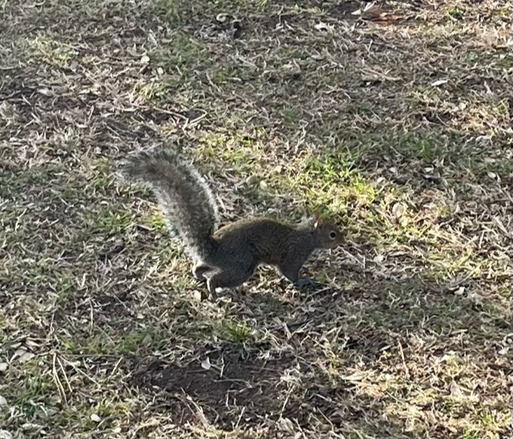
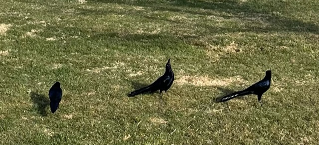
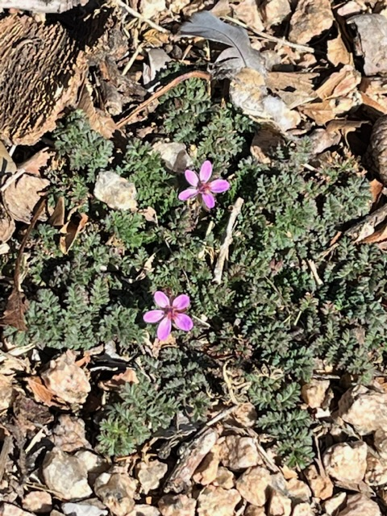

Trees lose their leaves during winter, which decreases overall energy use when less is available.
 wing adaptations may be allowing them to gain lift from air currents rather than being pushed back they swoop and dive with changes in the wind speed, but can still move independently whether there is wind or not
 bright colors attract pollinators fuzz on leaves appears to repel moisture well
large amounts of waste are placed into landfills every year. efforts are being made to recycle what can be recycled or break down plastic that can't be recycled--but what about other hazardous materials?
Self driving cars are widely known for being dangerous to both passengers and pedestrians. Maybe there is some way to further minimize damage in the case that a crash occurs?
Certain foods have a habit of drying and sticking onto cookware if left unattended for too long. Maybe a different material would make the dishes more resistant to this?
 These vines curl around this pillar in order to anchor to it. This method is much more dependable than a traditional screw or adhesive, as the actual shape of the vine prevents movement rather than a piece that could fail.
 This pigeon looks to have more fat and/or more feathers than usual to compensate for the cold weather in winter.
 Fans out its feathers, making it appear much larger. Being able to collapse that many feathers into a small space and quickly extend them could have practical applications elsewhere.
I was driving around in circles looking for an open parking spot, and it occurred to me--I wonder if there exists any way in nature to make that search more efficient? I'm sure there are plenty of ways it would be helpful to have a fast way to sort a group of objects into free spaces as they open up, say on a supercomputer doing a number of jobs or sorting passengers more quickly onto planes.
Quite a few studies have shown that heavy backpacks, shoulder bags, etc., can strain or damage the spine and back muscles. Perhaps a different design for the straps or bag could distribute weight differently and eliminate this problem?
Biomimicry has already allowed many advancements in how homes are cooled and heated, using solutions that are more mechanical than electrical. Maybe that same sort of engineering could be applied to coats or jackets, making clothing that is warm in the winter but cool in the summer.
 Mountain goats retain balance and mobility even on sheer cliff edges like shown above. They way they do this could have something to do with the material of their hooves or structure of their legs, but I would assume a large part of this skill is psychological -- either learned or instinctual
Mountain goats retain balance and mobility even on sheer cliff edges like shown above. They way they do this could have something to do with the material of their hooves or structure of their legs, but I would assume a large part of this skill is psychological -- either learned or instinctual
Polar bears have many useful adaptations, like coats that keep them warm in the winter and claws that give traction on ice and snow.
The school has been closed or delayed many times this week due to icy roads and cold weather. Maybe there exists in nature some adaptation that could be repurposed to keep roads from freezing even in cold, rainy weather.
https://nature.discoveryplace.org/blog/ask-a-naturalist-what-do-frogs-and-toads-do-in-winter
 Some species of toad are able to survive being frozen solid during winter, using the high amounts of sugar in their blood.
Some species of toad are able to survive being frozen solid during winter, using the high amounts of sugar in their blood.
Oftentimes, dealing with many objects, factors, tasks, people, etc., some number of them often 'slip through the cracks', either forgotten or left unattended to in favor of others. Perhaps in nature there exists some behavior that is better suited to keeping track of a large number of details at once
There are plenty of situations where, in some way or another, our own adaptations for observing the world around us are not able to interpret a situation correctly. In certain cases this can be harmless or even fun, such as when used to create optical illusions or magic eye images. In other cases, however, misinterpretation of the facts can have serious consequences. Maybe leveraging the observational skills of other organisms could lead to technology that provides a second opinion or a new point of view in these sort of circumstances.
Use of nature inspired temperature control systems for large buildings has already been proven to work exceptionally well, but unfortunately these methods have only been employed in a small number of buildings. If there were a way to retrofit existing ventilation systems with this new technology (or similar), it would make improvements at a fraction of the cost of remodeling entirely.
 The squirrel's bushy tail helps it keep balance when climbing trees and leaping between branches. What makes it unique is that it can collapse to a fraction of its size to fit through small gaps and tight spaces.
 Crow feathers have an interesting patterning that gives them an iridescent sheen. Similar natural patterns have been adapted to give our own technology this same interesting shine.
 These flowers are some of the first to sprout as spring begins, and have tough root systems to thrive even in harsh conditions like asphalt and concrete. The ability to break up these hard materials to get at the nutrients underneath is a useful adaptation.
Dry erase boards have been quite the useful invention, useful in a variety of areas of life. Traditional whiteboards, however, often build up a permanent layer of marker residue that makes it difficult to mark or erase the board after extensive use. Some sort of natural adaptation likely exists that could combat this residue, which when applied to whiteboards could increase their longevity.
Humans often end up with a large excess of energy, either due to overeating or living a lifestyle that demands very little in the way of physical exertion. The most common way to work off this excess energy is by exercising, which often takes energy while having no meaningful impact on the world. Perhaps some organism or organisms have a more useful way that they deal with this issue.
<\html>